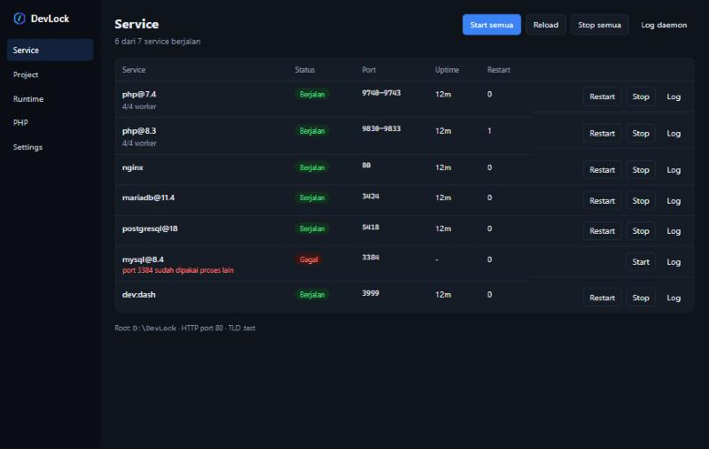
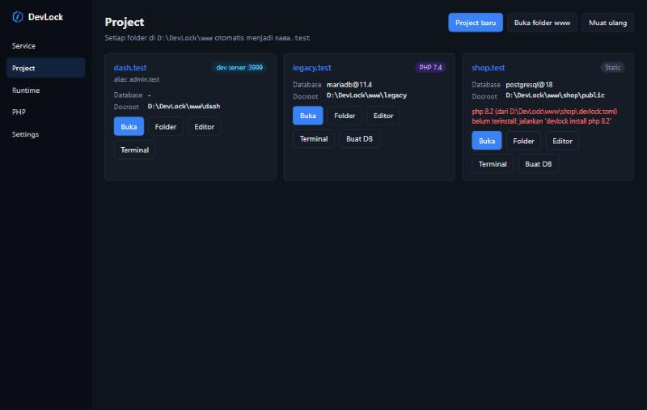
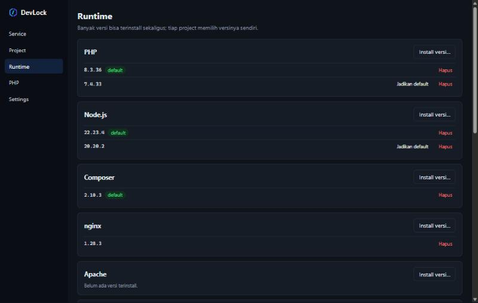

Banyak versi PHP, Node, dan database. Jalan bersamaan. Dipilih per project.
DevLock adalah local development environment untuk Windows, alternatif Laragon,
XAMPP, dan WAMP. blog.test memakai PHP 7.4 dan MySQL 5.7, sementara
shop.test memakai PHP 8.4 dan PostgreSQL 18, aktif di saat yang sama.
Installer per user tanpa hak admin, atau zip portable. Lisensi MIT / Apache-2.0.

Semua yang dibutuhkan project web, tanpa saling mengganggu
Tiap project menulis kebutuhannya di file .devlock.toml. DevLock
menyiapkan versi, service, domain, dan sertifikatnya.
Multi-versi bersamaan
Tiap versi PHP punya pool php-cgi sendiri; tiap database + versi adalah instance dengan port dan data terpisah.
Domain otomatis
Setiap folder di www menjadi nama.test. Lewat file hosts, atau DNS wildcard *.test.
Shim per project
php, composer, node, npm, mysql, psql, dan lainnya otomatis memakai versi milik folder tempat Anda mengetiknya.
HTTPS lokal
CA DevLock sendiri, sertifikat per site, dan redirect HTTP→HTTPS opsional. PHP dan Node ikut memercayainya.
Database lengkap
MySQL, MariaDB, PostgreSQL, dan MongoDB, ditambah Redis atau Garnet sebagai cache. Buat, dump, dan restore database dari CLI atau GUI.
Dev server Node
dev = "npm run dev": dev server dijalankan sebagai service, port-nya dibaca otomatis, lalu domain diarahkan ke sana.
Email & panel DB
Mailpit menangkap semua email di mail.test; Adminer di adminer.test langsung mengenali instance database Anda.
Bagikan ke publik
devlock share blog membuka site lewat Cloudflare Quick Tunnel sampai Anda menekan Ctrl+C.
Satu file kecil per project
Versi PHP, Node, database, cache, web server, dan HTTPS ditulis di folder project, jadi ikut di-commit dan sama di setiap komputer tim.
# www\toko\.devlock.toml php = "8.3" database = "mysql@8.4" cache = "redis@8" dev = "npm run dev" # Vite berjalan di samping PHP https = true
Versi juga dibaca dari file yang sudah biasa dipakai: composer.json,
.nvmrc, go.mod, .python-version, dan
.java-version.


Runtime dari sumber resmi, diverifikasi
Semua runtime diunduh langsung dari penerbitnya dan dicek checksum-nya sebelum dipasang: php.net, nodejs.org, nginx.org, mariadb.org, mysql.com, postgresql.org, go.dev, Adoptium, MongoDB, dan rilis GitHub resmi.
| Kategori | Yang tersedia |
|---|---|
| Bahasa | PHP, Node.js, Composer, Go, Python, Java (Temurin) |
| Web server | nginx, Apache (per project, untuk .htaccess) |
| Database | MySQL, MariaDB, PostgreSQL, MongoDB |
| Cache | Redis, Garnet |
| Alat | Adminer, Mailpit, cloudflared, Xdebug |
Mulai dalam lima menit
Contoh untuk project Laravel. Semua langkah juga bisa dilakukan lewat GUI.
- Pasang DevLockJalankan installer dari halaman Releases, lalu buka terminal baru.
devlock path add # shim php/composer/node masuk PATH - Install runtime yang dibutuhkan
devlock install php 8.3 devlock install composer devlock install nginx devlock install mysql 8.4 devlock install node 22
- Buat project
devlock new laravel toko --php 8.3 --db mysql@8.4
- Jalankan
devlock start # nginx, PHP 8.3, MySQL 8.4 → http://toko.test
Langkah lengkap, project Node, WordPress, HTTPS, dan pemecahan masalah ada di panduan.
Dibandingkan alat lain
| DevLock | Laragon | XAMPP | |
|---|---|---|---|
| Beberapa versi PHP aktif bersamaan | Ya | Satu aktif | Satu |
| Beberapa versi database bersamaan | Ya | Satu aktif | Satu |
| Versi dipilih per project (file di project) | Ya | Tidak | Tidak |
| Dev server Node sebagai service | Ya | Tidak | Tidak |
| Open source | MIT / Apache-2.0 | Tidak | Ya |
Sudah memakai Laragon atau XAMPP? devlock import memindahkan project dari
www/htdocs tanpa menyalin file.
Coba DevLock sekarang
Portable, tanpa telemetri, dan semua service hanya mendengarkan di 127.0.0.1.
Unduh rilis terbaru